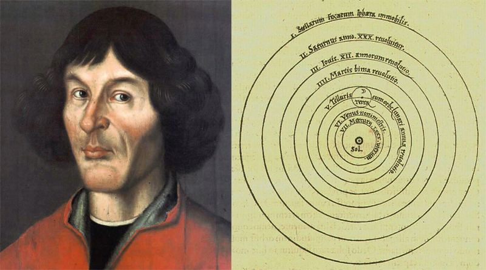

by Anthony
Postado em 1 de Janeiro, de 2019 às 12:00
Nicolau Copérnico (Toruń, 19 de fevereiro de 1473 — Frauenburgo, 24 de maio de 1543) foi um astrônomo e matemático polonês que desenvolveu a teoria heliocêntrica do Sistema Solar. Foi também cónego da Igreja Católica, governador e administrador, jurista, astrônomo e médico. Sua teoria do Heliocentrismo, que colocou o Sol como o centro do Sistema Solar, contrariando a então vigente Teoria Geocêntrica (que considerava a Terra como o centro), é considerada como uma das mais importantes hipóteses científicas de todos os tempos, tendo constituído o ponto de partida da astronomia.
Na teoria de Copérnico, a Terra move-se em torno do Sol. Mas, seus dados foram corrigidos pelas observações de Tycho Brahe. Com base nelas e em seus próprios cálculos, Johannes Kepler reformou radicalmente o modelo copernicano e chegou a uma descrição realista do Sistema Solar. Esse fenômeno já havia sido estudado e defendido pelo bispo de Lisieux, Nicole d'Oresme, no século XIV. O movimento da Terra era negado pelos partidários de Aristóteles e Ptolomeu. Eles argumentavam que, caso a Terra se movesse, as nuvens, os pássaros no ar ou os objetos em queda livre seriam deixados para trás. Galileu combateu essa ideia, afirmando que, se uma pedra fosse abandonada do alto do mastro de um navio, um observador a bordo sempre a veria cair em linha reta, na vertical. E, baseado nisso, nunca poderia dizer se a embarcação estava em movimento ou não. Caso o barco se movesse, porém, um observador situado na margem veria a pedra descrever uma curva descendente – porque, enquanto cai, ela acompanha o deslocamento horizontal do navio.
A teoria do modelo heliocêntrico, a maior teoria de Copérnico, foi publicada em seu livro, De revolutionibus orbium coelestium ("Da revolução de esferas celestes"), durante o ano de sua morte, 1543. Apesar disso, ele já havia desenvolvido sua teoria algumas décadas antes. O livro marcou o começo de uma mudança de um universo geocêntrico, ou antropocêntrico, com a Terra em seu centro. Copérnico acreditava que a Terra era apenas mais um planeta que concluía uma órbita em torno de um sol fixo todo ano e que girava em torno de seu eixo todo dia. Ele chegou a essa correta explicação do conhecimento de outros planetas e explicou a origem dos equinócios corretamente, através da vagarosa mudança da posição do eixo rotacional da Terra. Ele também deu uma clara explicação da causa das estações: O eixo de rotação da terra não é perpendicular ao plano de sua órbita. Em sua teoria, Copérnico descrevia mais círculos, os quais tinham os mesmos centros, do que a teoria de Ptolomeu (modelo geocêntrico). Apesar de Copérnico colocar o Sol como centro das esferas celestiais, ele não fez do Sol o centro do universo, mas perto dele.
Da sua publicação, até aproximadamente 1700, poucos astrônomos foram convencidos pelo sistema de Copérnico, apesar da grande circulação de seu livro (aproximadamente 500 cópias da primeira e segunda edições, o que é uma quantidade grande para os padrões científicos da época). Entretanto, muitos astrônomos aceitaram partes de sua teoria, e seu modelo influenciou muitos cientistas renomados que viriam a fazer parte da história, como Galileu e Kepler, que conseguiram assimilar a teoria de Copérnico e melhorá-la. As observações de Galileu das fases de Vênus produziram a primeira evidência observacional da teoria de Copérnico. Além disso, as observações de Galileu das luas de Júpiter provaram que o sistema solar contém corpos que não orbitavam a Terra.
Saber que sabemos o que sabemos, e saber que não sabemos o que não sabemos, esta é a verdadeira sabedoria.